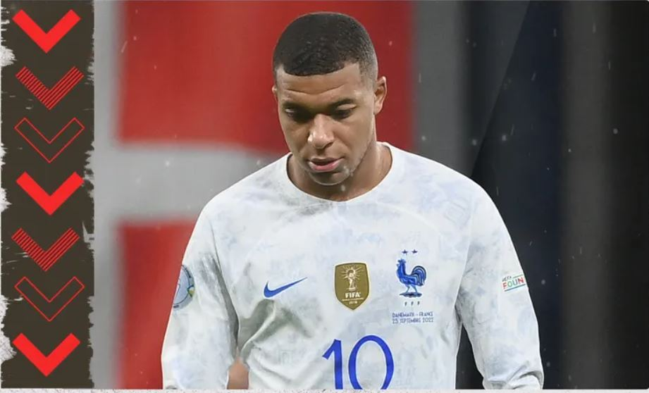

TOP 5 team on FIFA World Cup Qatar 2022
BRAZIL
Неймар, Вінісіус Жуніор, Рафінья, Антоні, Річарлісон, Габріель Жезус, Родріго та Габріель
Мартінеллі. Додайте найкращого бомбардира Копа Лібертадорес Педро, і це група нападників, з яких бос
збірної Бразилії Тіте повинен вибрати в Катарі.
Ця форвардна лінія є головною причиною того, чому «Селєсао» є фаворитами, щоб підняти трофей у 2022
році, але вони також мають багато досвідчених голів як у захисті, так і в півзахисті, а також двох
найкращих воротарів Прем’єр-ліги, Аліссона та Едерсона.
Бразилія раніше була фаворитом Чемпіонатів світу і не вигравала їх, але зараз важко розглядати їх як
кінцевих переможців.
ARGENTINA
Ліонель Мессі та компанія будуть дуже задоволені тим, як склалося квітневе жеребкування
групового етапу, оскільки їм належить зустрітися з Мексикою, Польщею та Саудівською Аравією.
Мессі повернувся у форму для клубу та країни, у той час як Скалоні сприяв згуртованості та духу у своїй
команді, яка має потенціал, щоб витримати весь шлях.
Чи зможуть тепер чемпіони Копа Америка підкорити світ?
GERMANY
Можливо, Німеччина виграла лише два з восьми матчів у 2022 році, але є ознаки того, що
Хансі Флік створює команду, якої варто боятися в найближчі роки.
Джамал Мусіала розквітає в одного з найкращих молодих талантів європейського футболу, у той час як вони
мають великий досвід у формі Томаса Мюллера, Мануеля Нойєра, Ілкая Гюндогана та Джошуа Кімміха.
Оскільки вони потрапили в одну групу з Іспанією на Чемпіонат світу, єдине, що стримує їх, може бути
важке жеребкування в плей-офф, якщо вони не зможуть забезпечити перше місце.
SPAIN
Іспанії не пощастило опинитися на жеребкуванні разом із Німеччиною , створивши титанічну
боротьбу в першому раунді між двома фаворитами перед турніром. Вони справді виграли свою групу Ліги
націй у підготовці до Чемпіонату світу, і, хоча є сумніви щодо
того, чи є у них атака, щоб використати перевагу своїх творчих талантів у півзахисті, команда Луїса
Енріке перебуває у пристойній формі до Катару-2022.
FRANCE

2022 рік не був щасливим для діючих чемпіонів, оскільки Франція виграла лише один із шести
матчів Ліги націй і ледь уникла вильоту з змагань.
Можливо, найбільше тривожить те, що їх двічі обіграла Данія, з якою вони знову зустрінуться на групових
етапах у Катарі.
Враховуючи травми Поля Погба, Н'Голо Канте, Преснеля Кімпембе та Крістофера Нкунку, а також знаки
запитання щодо фізичної форми Каріма Бензема та ставлення Кіліана Мбаппе, все йде не так добре для
улюбленої команди Дідьє Дешама.